Heroic Age of Antarctic Exploration
The Heroic Age of Antarctic Exploration was an era which began at the end of the 19th century, and ended after the First World War; the Shackleton–Rowett Expedition of 1921–22 is often cited by historians as the dividing line between the "Heroic" and "Mechanical" ages.[1][2][3] During the Heroic Age the Antarctic continent became the focus of international efforts that resulted in intensive scientific and geographical exploration, in which 17 major Antarctic expeditions were launched from ten countries.[4] The common factor in these expeditions was the limited nature of the resources available to them before advances in transport and communication technologies revolutionized the work of exploration.[1][5] This meant that each expedition became a feat of endurance that tested, and sometimes exceeded its personnel's physical and mental limits. The "heroic" label, bestowed later, recognized the adversities which had to be overcome by these pioneers, some of whom did not survive the experience; during this period 19 expedition members died.
During the course of these expeditions the geographical and magnetic poles were both reached. The achievement of being first to the geographical South Pole was a primary object in some expeditions, and was the sole rationale for Roald Amundsen's venture. However, this was not the only aspect of polar exploration during this time; other expeditions worked with defined objectives in different areas of the continent. As a result of all this activity, much of the continent's coastline was discovered and mapped, and significant areas of its interior were explored. The expeditions also generated large quantities of scientific data and specimens across a wide range of scientific disciplines, the examination and analysis of which would keep the world's scientific communities busy for decades.[6]
Contents
Origins[edit]
| Terra Australis | |
|---|---|
| 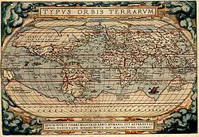 "Terra Australis Nondum Cognita" is the large continent on the bottom of this 1570 map by Abraham Ortelius | |
| Information | |
| Type | Hypothetical continent |
{kind=link}
The exploration of the South Pole has been an off and on area of focus; this particular period, the Heroic Age of Antarctic Exploration, is not the first intensive period of Antarctic exploration. Curtailing what is commonly known as the Age of Exploration, British explorer James Cook would be one of the few explorers who would travel to that Southern region of the world. The discoveries of his second voyage (1772–1775) would change the global map forever.[7] Prior to his expedition it was believed that a large continent known as Terra Australis occupied the majority of the Southern hemisphere. However, Cook discovered that no such land mass existed though massive ice floes prevented his reaching Antarctica proper.[7] He did hypothesize that, based upon the amount of ice, there must be an originating land mass.[7] Subsequently, exploration of the Southern regions of the world came to a great halt. However, a period of interest arose again between 1819 and 1843.[8] As Europe settled after a period of revolution, war, and unrest, explorers Bellingshausen, Biscoe, Balleny, Charles Wilkes, Dumont D'Urville, and James Clark Ross sought greater knowledge of the Antarctic regions.[8] The primary goal of these explorers was to penetrate the ice walls that hid Antarctica proper, beginning with Bellingshausen's circumnavigation of the region, D'Urville's discovery of the first rocky land formation, and culminating in Wilkes's discovery of Victoria Land, featuring the volcanoes now known as Mt. Terror and Mt. Erebus.[8] These explorers, despite their impressive contributions to South Polar exploration, were unable to penetrate the interior of the continent and, rather, formed a broken line of discovered lands along the coastline of Antarctica.
Antarctic Region, 1848 | |
|---|---|
| 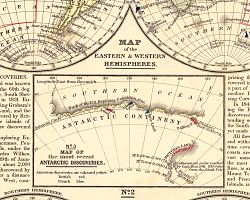 The known Antarctic region after the 1819–1843 period of intensive exploration. |
{kind=link}
What followed this period of Antarctic interest is what historian H. R. Mill called 'the age of averted interest'.[9] Following the expedition South by the ships HMS Erebus and HMS Terror under James Clark Ross (January, 1841), he suggested that there were no scientific discoveries, or 'problems', worth exploration in the far South.[9] It is considered that Ross' influence, as well as the loss of the Franklin expedition in the Arctic, led to disinterest in polar inquiry, particularly by The Royal Society: the British-founded organization that helped oversee many Arctic explorations, including those that would be made by Shackleton and Scott. However, in the following twenty years after Ross' return, there was a general lull internationally in Antarctic exploration.[9]
{kind=link}
The initial impetus for the Heroic Age of Antarctic Exploration is somewhat contested as it is a vague international movement. George von Neumayer of Hamburg, also an Antarctic explorer, worked to renew Antarctic exploration in 1861 onwards as he worked in an observatory in Melbourne.[8] His particular interests were the importance of meteorology and how more information of the South Pole could lead to more accurate weather predictions. This helps explain German involvement in Antarctic research. Another, particularly British, impetus more closely tied to the period is a lecture given by Dr. John Murray entitled "The Renewal of Antarctic Exploration", given to the Royal Geographical Society in London, November 27, 1893.[10] Murray advocated that research into the Antarctic should be organised to "resolve the outstanding geographical questions still posed in the south".[11] Furthermore, the Royal Geographic Society instated an Antarctic Committee shortly prior to this, in 1887, which successfully incited many whalers to explore the Southern regions of the world and foregrounded the lecture given by Murray.[8] In August 1895 the Sixth International Geographical Congress in London passed a general resolution calling on scientific societies throughout the world to promote the cause of Antarctic exploration "in whatever ways seem to them most effective".[12] Such work would "bring additions to almost every branch of science".[12] The Congress had been addressed by the Norwegian Carsten Borchgrevink, who had just returned from a whaling expedition during which he had become one of the first to set foot on the Antarctic mainland. During his address, Borchgrevink outlined plans for a full-scale pioneering Antarctic expedition, to be based at Cape Adare.[13]
However, the Heroic Age was inaugurated by an expedition launched by the Belgian Geographical Society in 1897; Borchgrevink followed a year later with a privately sponsored expedition.[14][15] The designation "heroic age" came later; the term is not used in any of the early expedition accounts or memoirs, nor in the biographies of polar figures which appeared in the 1920s and 1930s. It is not clear when the term was first coined or adopted generally; it was used in March 1956 by the British explorer Duncan Carse, writing in The Times. Describing the first crossing of South Georgia in 1916, he wrote of "three men from the heroic age of Antarctic exploration, with 50 feet of rope between them, and a carpenter's adze".[16]
Expeditions, 1897–1922[edit]
Notes
- The summaries in the table do not include the scientific work carried out by these expeditions, each of which brought back findings and specimens across a wide range of disciplines.
- The table does not include the numerous whaling voyages that took place during this period, or sub-Antarctic expeditions such as that of Carl Chun in 1898–99, which did not penetrate the Antarctic circle.[17] Also excluded is the Cope Expedition of 1920–22, which collapsed through lack of funding, though two men were landed from a Norwegian whaler and spent a year on the Antarctic peninsula.[18] Three expeditions scheduled to start in 1914 were cancelled due to the outbreak of the First World War: an Austrian Antarctic Expedition to be led by Felix König; an Anglo-Swedish expedition under Otto Nordenskjöld and Johan Gunnar Andersson, and a British expedition under Joseph Foster Stackhouse.[19]
- † denotes leader died during expedition
| Dates | Country | Expedition name(s) | Ship(s) | Leader | Expedition summary | Refs |
|---|---|---|---|---|---|---|
| 1897–99 | Belgian Antarctic Expedition | Belgica | Adrien de Gerlache |
This was the first expedition to overwinter within the Antarctic Circle, after the ship was icebound in the Bellingshausen Sea. It collected the first annual cycle of Antarctic observations. It also reached 71°30'S, and discovered the Gerlache Strait. First Mate Roald Amundsen would later lead the first arrival at the South Pole, in 1911. | [4][20][21] | |
| 1898–1900 | UK | British Antarctic Expedition 1898 (Southern Cross Expedition) |
Southern Cross | 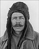 Carsten Borchgrevink |
The first expedition to overwinter on the Antarctic mainland (Cape Adare), it was the first to make use of dogs and sledges. It made the first ascent of The Great Ice Barrier,[22] and set a Farthest South record at 78°30'S. It also calculated the location of the South Magnetic Pole. | [23][24][25] |
| 1901–04 | UK | National Antarctic Expedition 1901 (Discovery Expedition) |
Discovery (main vessell) Morning (relief ship) Terra Nova (relief ship) |
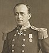 Robert Falcon Scott |
It made the first ascent of the Western Mountains in Victoria Land, and discovered the polar plateau. Its southern journey set a new Farthest South record, 82°17'S.[26] Many other geographical features were discovered, mapped and named. This was the first of several expeditions based in McMurdo Sound. | [27][28][29] |
| 1901–03 | Germany | First German Antarctic Expedition (Gauss Expedition) |
Gauss | 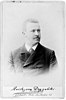 Erich von Drygalski |
The first expedition to investigate eastern Antarctica, it discovered the coast of Kaiser Wilhelm II Land, and Mount Gauss. The expedition's ship became trapped in ice, which prevented more extensive exploration. | [30][31][32] |
| 1901–03 | Sweden | Swedish Antarctic Expedition | Antarctic (main vessell) Uruguay (support ship) |
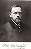 Otto Nordenskiöld |
This expedition worked in the east coastal area of Graham Land, and was marooned on Snow Hill Island and Paulet Island in the Weddell Sea, after the sinking of its expedition ship. It was rescued by the Argentinian naval vessel ARA Uruguay. | [33][34][35] |
| 1902–04 | UK | Scottish National Antarctic Expedition | Scotia | 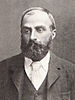 William Speirs Bruce |
The permanent Orcadas weather station in South Orkney Islands was established. The Weddell Sea was penetrated to 74°01'S, and the coastline of Coats Land was discovered, defining the sea's eastern limits. | [36][37] |
| 1903–05 | Third French Antarctic Expedition | Français | 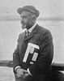 Jean-Baptiste Charcot |
Originally intended as a relief expedition for the stranded Nordenskiöld party, the main work of this expedition was the mapping and charting of islands and the western coasts of Graham Land, on the Antarctic peninsula. A section of the coast was explored, and named Loubet Land after the President of France. | [38][39][40] | |
| 1907–09 | UK | British Antarctic Expedition 1907 (Nimrod Expedition) |
Nimrod | 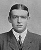 Ernest Shackleton |
The first expedition led by Shackleton. Based in McMurdo Sound, it pioneered the Beardmore Glacier route toward the South Pole, and the (limited) use of motorised transport. Its southern march reached 88°23'S, a new Farthest South record 97 geographical miles from the Pole. The Northern Party reached the location of the South Magnetic Pole. | [41][42][43] |
| 1908–10 | Fourth French Antarctic Expedition | Pourquoi-Pas? IV | Jean-Baptiste Charcot |
This continued the work of the earlier French expedition with a general exploration of the Bellingshausen Sea, and the discovery of islands and other features, including Marguerite Bay, Charcot Island, Renaud Island, Mikkelsen Bay, Rothschild Island. | [38][44] | |
| 1910–12 | Japanese Antarctic Expedition | Kainan Maru | Nobu Shirase |
The first non-European Antarctic expedition carried out a coastal exploration of King Edward VII Land, and investigated the eastern sector of the Great Ice Barrier, reaching 80°5'S. | [45][46] | |
| 1910–12 | Amundsen's South Pole expedition | Fram | 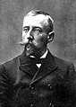 Roald Amundsen |
First to the South Pole: Amundsen set up camp on the Great Ice Barrier, at the Bay of Whales. He discovered a new route to the polar plateau via the Axel Heiberg Glacier. A party of five led by Amundsen reached the South Pole via this route on 14 December 1911. | [47][48][49] | |
| 1910–13 | UK | British Antarctic Expedition 1910 (Terra Nova Expedition) |
Terra Nova | 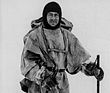 Robert Falcon Scott† |
Scott's last expedition, based like his first in McMurdo Sound. Scott and four companions reached the South Pole via the Beardmore route on 17 January 1912, 33 days after Amundsen. All five died on the return journey from the Pole, through a combination of starvation and cold. | [50][51][52] |
| 1911–13 | Germany | Second German Antarctic Expedition | Deutschland | 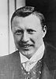 Wilhelm Filchner |
The main objective was to establish the nature of the geographical relationship between the Weddell and Ross seas. The expedition made the deepest southernmost Weddell Sea penetration to date, reaching 77°45'S, and discovering the Luitpold Coast, Filchner-Ronne Ice Shelf, and Vahsel Bay. It failed to establish a shore base from which to conduct its explorations, and after a long drift in the Weddell Sea pack it returned to South Georgia. | [35][53][54] |
| 1911–14 | Australia and |
Australasian Antarctic Expedition | Aurora | Douglas Mawson |
The expedition concentrated on the stretch of Antarctic coastline between Cape Adare and Mount Gauss, carrying out mapping and survey work on coastal and inland territories. Discoveries included Commonwealth Bay, Ninnis Glacier, Mertz Glacier, and Queen Mary Land. | [55][56] |
| 1914–17 | UK | Imperial Trans-Antarctic Expedition | Endurance |
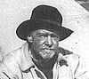 Ernest Shackleton |
Another transcontinental crossing attempt. It failed to land the Weddell Sea shore party after Endurance was trapped and crushed in ice. The expedition then rescued itself after a series of exploits, including a prolonged drift on an ice-floe, Shackleton's open boat journey, and the first crossing of South Georgia. | [57][58] |
| 1914–17 | UK | Ross Sea party In support of Imperial Trans-Antarctic Expedition |
Aurora | 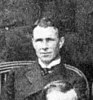 Aeneas Mackintosh† |
Its objective was to lay depots across the Great Ice Barrier, to supply the party crossing from the Weddell Sea. All the required depots were laid, but in the process three men, including the leader Mackintosh, lost their lives. | [59] |
| 1921–22 | UK | Shackleton–Rowett Expedition | Quest | 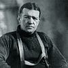 Ernest Shackleton† |
Vaguely defined objectives included coastal mapping, a possible continental circumnavigation, the investigation of sub-Antarctic islands, and oceanographic work. After Shackleton's death on 5 January 1922, Quest completed a shortened programme before returning home. | [60][61] |
{kind=link}
{kind=link}
{kind=link}
{kind=link}
{kind=link}
{kind=link}
{kind=link}
{kind=link}
{kind=link}
{kind=link}
{kind=link}
{kind=link}
{kind=link}
{kind=link}
{kind=link}
{kind=link}
Expedition deaths during the Heroic Age[edit]
Twenty-two men died on Antarctic expeditions during the Heroic Age. Of these, four died of illnesses unrelated to their Antarctic experiences, and two died from accidents in New Zealand, and one in France. The remaining 15 perished during service on or near the Antarctic continent.
| Expedition | Name | Country | Date of death | Place of death | Cause | Refs |
|---|---|---|---|---|---|---|
| Belgian Antarctic Expedition | Carl August Wiencke | Norway | 22 January 1898 | South Shetland Islands | Washed overboard and drowned | [62] |
| Émile Danco | Belgium | 5 June 1898 | Bellingshausen Sea | Heart disease | ||
| Southern Cross Expedition | Nicolai Hansen | Norway | 14 October 1899 | Cape Adare, Antarctica | Intestinal disorder | [63] |
| Discovery Expedition | Charles Bonnor | UK | 2 December 1901 | Lyttelton Harbour, New Zealand | Fall from ship's mast | [64][65] |
| George Vince | UK | 11 March 1902 | Ross Island, Antarctica | Slip over ice precipice | ||
| First German Antarctic Expedition | Josef Enzensperger | Germany | 2 February 1903 | Kerguelen Island | Beriberi | |
| Swedish Antarctic Expedition | Ole Kristian Wennersgaard | Sweden | 7 June 1903 | Paulet Island | Heart Failure | |
| Scottish National Antarctic Expedition | Allan Ramsey | UK | 6 August 1903 | South Orkney Islands | Heart disease | [66] |
| Third French Antarctic Expedition | F. Maignan | France | 15 August 1903 | Le Havre, France | Struck by broken rope | 4]8 |
| Terra Nova Expedition | Edgar Evans | UK | 17 February 1912 | Beardmore Glacier, Antarctica | Head injury, starvation, and cold | [67][68][69] [70][71] |
| Lawrence Oates | UK | 17 March 1912 | Great Ice Barrier, Antarctica | Starvation and cold | ||
| Robert Falcon Scott | UK | 29 March 1912 | Great Ice Barrier, Antarctica | Starvation and cold | ||
| Edward Wilson | UK | 29 March 1912 | Great Ice Barrier, Antarctica | Starvation and cold | ||
| Henry Bowers | UK | 29 March 1912 | Great Ice Barrier, Antarctica | Starvation and cold | ||
| Robert Brissenden | UK | 17 August 1912 | Admiralty Bay, New Zealand | Drowning | ||
| Second German Antarctic Expedition | Walter Slossarczyk | Germany | 26 November 1911 | Mount Duse, South Georgia | Suicide | |
| Richard Vahsel | Germany | 8 August 1912 | Weddell Sea | Syphilis | [54][72][73] | |
| Australasian Antarctic Expedition | Belgrave Ninnis | UK | 14 December 1912 | King George V Land, Antarctica | Fall into crevasse | [74] |
| Xavier Mertz | Switzerland | 7 January 1913 | King George V Land, Antarctica | Hypervitaminosis A | ||
| Imperial Trans-Antarctic Expedition (Ross Sea party) |
Arnold Spencer-Smith | UK | 9 March 1916 | Ross Ice Shelf, Antarctica | Cold and scurvy | [75][76] |
| Aeneas Mackintosh | UK | 8 May 1916 | McMurdo Sound, Antarctica | Fall through sea ice | ||
| Victor Hayward | UK | 8 May 1916 | McMurdo Sound, Antarctica | Fall through sea ice | ||
| Shackleton–Rowett Expedition | Ernest Shackleton | UK | 5 January 1922 | South Georgia | Heart disease | [77] |
Another five men died shortly after returning from the Antarctic (this does not include the significant number who died on active service in the First World War):
- Engebret Knudsen, a member of the Belgian Antarctic Expedition, 1897–99, developed signs of mental illness and never fully recovered, died in 1900.[78]
- Harlof Klovstad, medical officer on the Southern Cross Expedition, 1898–1900, died of unrecorded causes during 1900.[79]
- Jorgen Petersen, First Mate on the Southern Cross, died in 1900 while returning in the ship from Australia.[79]
- Bertram Armytage, a member of the Nimrod Expedition, 1907–09, died of self-inflicted gunshot wounds, 12 March 1910.[80]
- Hjalmar Johansen, a member of Amundsen's 1910–12 expedition, died of self-inflicted gunshot wounds, 9 January 1913.[81]
End of the Heroic Age[edit]
There are different views about when the Heroic Age of Antarctic Exploration came to an end. Shackleton's Endurance expedition is sometimes referred to as the last Antarctic expedition of the Heroic Age.[82][83] Other chroniclers extend the era to the date of Shackleton's death, 5 January 1922, treating the Shackleton–Rowett, or Quest expedition, during which Shackleton died, as the final chapter of the Age.[84] According to Margery and James Fisher, Shackleton's biographers: "If it were possible to draw a distinct dividing line between what has been called the Heroic Age of Antarctic Exploration and the Mechanical Age, the Shackleton–Rowett expedition might make as good a point as any at which to draw such a line".[1] A journalist inspecting the ship before she sailed reported "Gadgets! Gadgets! Gadgets everywhere!".[1] These included wireless, an electrically heated crow's nest and an "odograph" that could trace and record the ship's route and speed.[1]
The heroic era of Antarctic exploration was ‘heroic’ because it was anachronistic before it began, its goal was as abstract as a pole, its central figures were romantic, manly and flawed, its drama was moral (for it mattered not only what was done but how it was done), and its ideal was national honour. It was an early testing-ground for the racial virtues of new nations such as Norway and Australia, and it was the site of Europe’s last gasp before it tore itself apart in the Great War.
— Tom Griffiths, Slicing the Silence: Voyaging to Antarctica
See also[edit]
- List of Antarctic exploration ships from the Heroic Age, 1897–1922
- Arctic exploration
- Farthest South
- History of Antarctica
- List of Antarctic expeditions
- List of polar explorers
Notes and references[edit]
- ^ Jump up to: a b c d e Fisher, p. 449
- ^ Smith, p. 414
- ^ The historian Aant Elzinga gives the much later date of 1945, considering World War II to be the turning point in Antarctic research.Elzinga, Aang (1993). Changing Trends in Antarctic Research. Dordrecth: Springer. ISBN 978-0-58-528849-9.
- ^ Jump up to: a b Barczewski, pp. 19–20.
- ^ Huntford, p. 691 – "before machines took over."
- ^ For example, the scientific results of the Scottish National Antarctic Expedition, 1902–04 were still being published in 1920 (Speak, p. 100). 25 volumes of results from the Terra Nova Expedition, 1910–13 had been published by 1925. ("British Antarctic Expedition 1910–13". Oxford Dictionary of National Biography. Retrieved 4 December 2008.)
- ^ Jump up to: a b c Kaye, I. (1969). Captain James Cook and the Royal Society. London: Notes and Records of the Royal Society of London, Vol. 24, No.1.
- ^ Jump up to: a b c d e American Association for the Advancement of Science (1887). The Exploration of the Antarctic Regions. New York: Science, Vol. 9, No. 223.
- ^ Jump up to: a b c Fogg, G.E. (2000). The Royal Society and the Antarctic. London, The Royal Society: Notes and Records of the Royal Society London, Vol. 54, No. 1.
- ^ Murray, John (1894). The Renewal of Antarctic Exploration. London: The Geographical Journal, Vol. 3, No. 1.
- ^ Crane, p. 75
- ^ Jump up to: a b Borchgrevink, Carstens (1901). First on the Antarctic Continent. George Newnes Ltd. ISBN 978-0-90-583841-0. Retrieved 11 August 2008. pp. 9–10
- ^ Borchgrevink, Carstens (1901). First on the Antarctic Continent. George Newnes Ltd. ISBN 978-0-90-583841-0. Retrieved 11 August 2008. pp. 4–5
- ^ Jones, p. 59
- ^ Some histories consider the Discovery expedition, which departed in 1901, as the first proper expedition of the Heroic Age. See "Mountaineering and Polar Collection – Antarctica". National Library of Scotland. Archived from the original on 23 June 2009. Retrieved 19 November 2008.
- ^ Carse, quoted by M. and J. Fisher, p. 389
- ^ "Carl Chun Collection". Archive Hub. Archived from the original on 27 May 2012. Retrieved 11 December 2008.
- ^ "John Lachlan Cope's Expedition to Graham Land 1920–22". Scott Polar Research Institute. Retrieved 11 December 2008.
- ^ Headland, R.K. (1989). Chronological List of Antarctic Expeditions and Related Historical Events. Cambridge: Cambridge University Press. p. 260.
- ^ "Antarctic Explorers – Adrien de Gerlache". South-pole.com. Retrieved 22 September 2008.
- ^ Huntford (Last Place on Earth) pp. 64–75
- ^ The Great Ice Barrier later became formally known as the Ross Ice Shelf. The older name has been used in this table, in keeping with the nomenclature of the Heroic Age.
- ^ "The Forgotten Expedition". Antarctic Heritage Trust. Archived from the original on 20 November 2009. Retrieved 13 August 2008.
- ^ "Borchgrevink, Carsten Egeberg (1864–1934)". Australian Dictionary of Biography Online Edition. Retrieved 10 August 2008.
- ^ Preston, p. 14
- ^ Modern recalculations based on analysis of photographs taken at the farthest south location suggest that the actual latitude may have been 82°11. See Crane, pp. 214–15
- ^ Preston, pp. 57–79
- ^ Crane, p. 253 (map); pp. 294–95 (maps)
- ^ Fiennes, p. 89
- ^ "Erich von Drygalski 1865–1949". South-pole.com. Retrieved 23 September 2008.
- ^ Mill, pp. 420–24
- ^ Crane, p. 307
- ^ Goodlad, James A. "Scotland and the Antarctic, Section II: Antarctic Exploration". Royal Scottish Geographical Society. Retrieved 23 September 2008.
- ^ "Otto Nordenskiöld 1869–1928". South-pole.com. Retrieved 23 September 2008.
- ^ Jump up to: a b Barczewski, p. 90
- ^ "Scotland and the Antarctic, Section 5: The Voyage of the Scotia". Glasgow Digital Library. Retrieved 23 September 2008.
- ^ Speak, pp. 82–95
- ^ Jump up to: a b Mills, William James (11 December 2003). Exploring Polar Frontiers. ABC-CLIO. ISBN 978-1-57-607422-0. Retrieved 23 September 2008. pp. 135–139
- ^ "Jean-Baptiste Charcot". South-pole.com. Retrieved 24 September 2008.(Francais voyage)
- ^ Mill, pp. 431–32
- ^ "Scotland and the Antarctic, Section 3: Scott, Shackleton and Amundsen". Glasgow Digital Library. Retrieved 24 September 2008.
- ^ Riffenburgh, pp. 309–12 (summary of achievements)
- ^ Huntford (Shackleton biography) p. 242 (map)
- ^ "Jean-Baptiste Charcot". South-pole.com. Retrieved 24 September 2008.(Pourquoispas? voyage)
- ^ Amundsen, Roald (1976). The South Pole, Vol II. London: C Hurst & Co. ISBN 09-0398-347-8.
- ^ "Nobu Shirase, 1861–1946". South-pole.com. Retrieved 24 September 2008.
- ^ Amundsen, Vol I pp. 184–95; Vol II, pp. 120–134
- ^ Huntford (Last Place on Earth), pp. 446–74
- ^ "Roald Amundsen". Norwegian Embassy (UK). Archived from the original on 22 April 2008. Retrieved 25 September 2008.
- ^ Scott's Last Expedition Vol I pp. 543–46, pp. 580–95
- ^ Preston, pp. 184–205
- ^ "Explorer and leader: Captain Scott". National Maritime Museum. Archived from the original on 2 December 2008. Retrieved 27 September 2008.
- ^ Huntford (Shackleton biography), pp. 366–68
- ^ Jump up to: a b "Wilhem Filchner, 1877–1957". South-pole.com. Retrieved 28 September 2008.
- ^ Mills, p. 129 et seq.
- ^ "Mawson, Sir Douglas 1882–1958". Australian Dictionary of Biography. Retrieved 28 September 2008.
- ^ Shackleton, pp. 63–85
- ^ Alexander, pp. 143–53
- ^ Tyler-Lewis, pp. 193–197
- ^ Huntford (Shackleton), p. 684
- ^ Fisher, p. 483
- ^ R. Amundsen, H. Decleir (ed.), Roald Amundsen’s Belgica diary: the first scientific expedition to the Antarctic (Bluntisham 1999)
- ^ "The Southern Cross Expedition". University of Canterbury, New Zealand. Retrieved 10 August 2008. ("First Burial on the Continent" section)
- ^ Crane, pp. 137–38
- ^ Crane, pp. 165–66
- ^ Speak, pp. 88–89
- ^ Scott, pp. 572–73
- ^ Scott, p. 592
- ^ Preston, pp. 218–219, 203–05
- ^ Huxley, pp. 345–46
- ^ Huxley, p. 389
- ^ Riffenburgh, Beau (2006). Encyclopedia of the Antarctic. Routledge. ISBN 978-0-41-597024-2. Retrieved 12 December 2008. Page 454
- ^ Headland, Robert K. (1989). Studies in Polar Research: Chronological List of Antarctic Explorations and Related Historical Events. Cambridge: Cambridge University Press. ISBN 978-0-52-130903-5. Retrieved 9 November 2008. Page 252
- ^ "Two of Antarctic Expedition Killed" (PDF). New York Times. 26 February 1913. Retrieved 4 December 2008.
- ^ Tyler-Lewis, p. 191
- ^ Tyler-wis, pp. 196–97; p. 240
- ^ Alexander, pp. 192–93
- ^ "Adrien de Gerlache, Belgica Belgian Antarctic Expedition 1897 – 1899". Cool Antarctica. Archived from the original on 9 October 2010. Retrieved 4 February 2014.
- ^ Jump up to: a b "Norway's Forgotten Explorer". Antarctic Heritage Trust. Retrieved 10 August 2008.
- ^ Riffenburgh, p. 304
- ^ Huntford (Last Place on Earth), p. 529
- ^ Alexander, pp. 4–5
- ^ "Scotland and the Antarctic, Part 3". Glasgow Digital Library. Retrieved 4 December 2008.
- ^ "Antarctic History – The Heroic Age of Antarctic Exploration". Cool Antarctica. Archived from the original on 10 May 2012. Retrieved 9 November 2008.
Sources[edit]
Books[edit]
- Alexander, Caroline (1998). The Endurance: Shackleton's Legendary Antarctic Expedition. London: Bloomsbury Publishing. ISBN 07-4754-123-X.
- American Association for the Advancement of Science (1887). The Exploration of the Antarctic Regions. New York: Science, Vol. 9, No. 223.
- Amundsen, Roald (1976). The South Pole, Vol II. London: C Hurst & Co. ISBN 09-0398-347-8.
- Barczewski, Stephanie (2007). Antarctic Destinies. London: Hambledon Continuum. ISBN 978-1-84-725192-3.
- Berton, Pierre (1988). Tha Arctic Grail. New York: Viking Penguin. ISBN 06-7082-491-7.
- Borchgrevink, Carstens (1901). First on the Antarctic Continent. George Newnes Ltd. ISBN 978-0-90-583841-0. Retrieved 11 August 2008.
- Crane, David (2005). Scott of the Antarctic: A Life of Courage, and Tragedy in the Extreme South. London: Harper Collins. ISBN 978-0-00-715068-7.
- Elzinga, Aang (1993). Changing Trends in Antarctic Research. Dordrecth: Springer. ISBN 978-0-58-528849-9.
- Fiennes, Ranulph (2003). Captain Scott. London: Hodder & Stoughton. ISBN 03-4082-697-5.
- Fisher, Margery and James (1957). Shackleton. London: James Barrie Books.
- Fogg, G.E. (2000). The Royal Society and the Antarctic. London, The Royal Society: Notes and Records of the Royal Society London, Vol. 54, No. 1.
- Griffiths, Tom (2007). Slicing the Silence:Voyaging to Antarctica. United States: Harvard University Press. ISBN 06-7402-633-0.
- McElrea, Richard; Harrowfield, David (2004). Polar Castaways: The Ross Sea Party of Sir Ernest Shackleton, 1914–1917. Montreal: McGill-Queen's University Press. ISBN 978-0-77-357245-4.
- Headland, Robert K. (1989). Studies in Polar Research: Chronological List of Antarctic Explorations and Related Historical Events. Cambridge: Cambridge University Press. ISBN 978-0-52-130903-5. Retrieved 9 November 2008.
- Huntford, Roland (1985). The Last Place on Earth. London: Pan Books. ISBN 03-4911-395-5.
- Huntford, Roland (1985). Shackleton. London: Hodder & Stoughton. ISBN 03-4025-007-0.
- Huxley, Leonard (ed.) (1913). Scott's Last Expedition, Vol. II. London: Smith, Elder & Co. ISBN 06-6579-784-2.CS1 maint: extra text: authors list (link)
- Jacka, Fred; Jacka, Eleanor, eds. (1988). Mawson's Antarctic Diaries. London, Sidney and Wellington: Unwin Hyman. ISBN 0-043-20209-8.
- Jones, Max (2003). The Last Great Quest. Oxford: Oxford University Press. ISBN 01-9280-483-9.
- Kaye, I. (1969). Captain James Cook and the Royal Society. London: Notes and Records of the Royal Society of London, Vol. 24, No.1.
- Machat, J. (1908). "The Antarctic Question – Voyages To The South Pole Since 1898". Annual Report of the Board of Regents of the Smithsonian Institution: 451–481. Retrieved 7 August 2009.
- Mill, Hugh Robert (1905). Siege of the South Pole. London: Alston Rivers. ASIN B008HLMMO6.
- Mills, Leif (1999). Frank Wild. Whitby, Yorks: Caedmon of Whitby. ISBN 09-0535-548-2.
- Murray, John (1894). The Renewal of Antarctic Exploration. London: The Geographical Journal, Vol. 3, No. 1.
- Preston, Diana (1997). A First Rate Tragedy. London: Constable & Co. ISBN 00-9479-530-4.
- Riffenburgh, Beau (2006). Encyclopedia of the Antarctic. Routledge. ISBN 978-0-41-597024-2. Retrieved 12 December 2008.
- Riffenburgh, Beau (2005). Nimrod. London: Bloomsbury Publishing. ISBN 07-4757-253-4.
- Scott, Robert Falcon (1913). Scott's Last Expedition, Vol I. London: Smith, Elder & Co. ISBN 06-6579-784-2.
- Shackleton, Ernest (1984). South. London: Century Publishing. ISBN 07-1260-111-2.
- Simpson-Hausley, Paul (1992). Antarctica: Exploration, Perception and Metaphor. London: Routledge. ISBN 978-0-20-303602-0.
- Smith, Michael (2014). Shackleton: By Endurance we Conquer. London: Oneworld. ISBN 978-1780-74707-1.
- Speak, Peter (2003). William Speirs Bruce. Edinburgh: NMS Publishing. ISBN 19-0166-371-X.
- Tyler-Lewis, Kelly (2007). The Lost Men. London: Bloomsbury Publishing. ISBN 978-0-74-757972-4.
Web sources[edit]
- "Antarctic Explorers – Adrien de Gerlache". South-pole.com. 2008. Retrieved 22 September 2008.
- "Antarctic History – The Heroic Age of Antarctic Exploration". Cool Antarctica. 2 December 2008. Archived from the original on 10 May 2012. Retrieved 6 December 2008.
- "Borchgrevink, Carsten Egeberg (1864–1934)". Australian Dictionary of Biography Online Edition. 2006. Retrieved 10 August 2008.
- "Carsten Borchgrevink (1864–1934)". South-pole.com. Retrieved 8 September 2008.
- "British Antarctic Expedition 1910–13". Oxford Dictionary of National Biography. May 2008. Retrieved 4 December 2008.
- "Carl Chun Collection". Archive Hub. Archived from the original on 27 May 2012. Retrieved 11 December 2008.
- "Erich von Drygalski 1865–1949". South-pole.com. 2008. Retrieved 23 September 2008.
- "Explorer and leader: Captain Scott". National Maritime Museum. Archived from the original on 2 December 2008. Retrieved 27 September 2008.
- "Wilhem Filchner, 1877–1957". South-pole.com. 2008. Retrieved 28 September 2008.
- "The Forgotten Expedition". Antarctic Heritage Trust. 29 November 2008. Archived from the original on 20 November 2009. Retrieved 6 December 2008.
- "German National Antarctic Expedition 1901–03". Cool Antarctica. 2 December 2008. Archived from the original on 22 May 2012. Retrieved 6 December 2008.
- Goodlad, James A. (2003). "Scotland and the Antarctic, Section 2: Antarctic Exploration". Royal Scottish Geographical Society. Retrieved 23 September 2008.
- Harrowfield, David. "The Southern Cross Expedition". University of Canterbury, New Zealand. Retrieved 10 August 2008.
- "John Lachlan Cope's Expedition to Graham Land 1920–22". Scott Polar Research Institute. Retrieved 11 December 2008.
- "Mawson, Sir Douglas 1882–1958". Australian Dictionary of Biography. 2006. Retrieved 28 September 2008.
- "Douglas Mawson". Cool Antarctica. 2 December 2008. Archived from the original on 22 May 2012. Retrieved 6 December 2008.
- Diary of Stan Taylor, Seaman on the Aurora 1912 -1913 journey
- "Mountaineering and Polar Collection – Antarctica". National Library of Scotland. 2007. Archived from the original on 23 June 2009. Retrieved 19 November 2008.
- "Norway's Forgotten Explorer". Antarctic Heritage Trust. 29 November 2008. Archived from the original on 20 November 2009. Retrieved 6 August 2008.
- "Nobu Shirase, 1861–1946". South-pole.com. 2008. Retrieved 24 September 2008.
- "Otto Nordenskiöld 1869–1928". South-pole.com. 2008. Retrieved 23 September 2008.
- Ryne, Linn. "Roald Amundsen". Norwegian Embassy (UK). Archived from the original on 22 April 2008. Retrieved 25 September 2008.
- "The Voyage of the Challenger". Stony Brook University, N.Y. Retrieved 9 November 2008.
- Working-Class 'Hero' after two decades of polar exploration. Portland Magazine. November 2012.